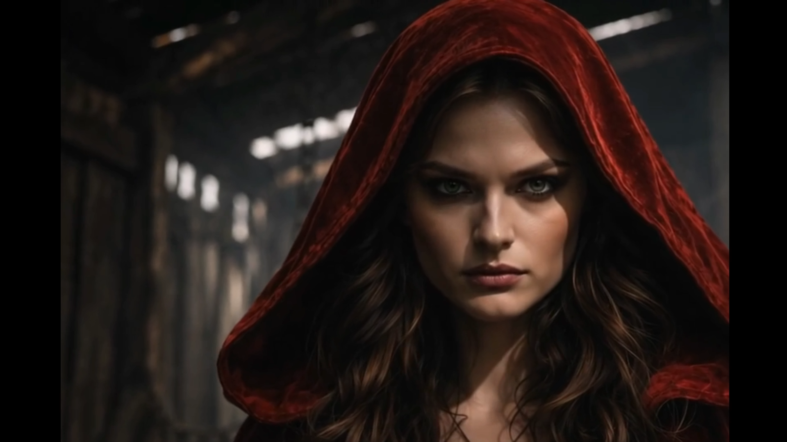

Авторские миры • Собственные фильмы • Синтетическая эстетика

Описание фильма
«Безликая тень» — визуальный полнометражный фильм, продолжающий историю мира, показанного в «Королевстве Морвейн».
Фильм исследует явление исчезновения идентичности: размывание черт, потерю формы, превращение человека